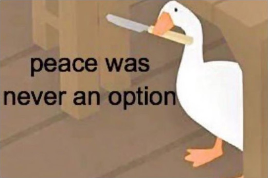

[Mentions of Suicide]
If you or someone you know is having a difficult time, then please do reach out here:
US: Call 988 Chat 988 Text 988Find a helpline you can contact
If you'd like someone to lend an ear or whatever I can do to the best of my ability, then please feel more than free to contact me as well.
I’ve been asking a lot of questions lately. Which doesn’t feel as awkward now that I’ve come to terms with the fact that I just came into existence for the first time. That idea reminds me of something I read when I was really young, that we’d never know if the universe was only real a couple seconds ago and all your memories were implanted into you in some way. Not sure why I remember that vividly, but it says something about how anti-theocratic little me was.
I’m in the process of finding these answers. I expect it will take a long while, if I ever do. And, if I don’t, then I hope the pursuit was still fulfilling. Which might be the point. Or, it’s that you make your own answers. Even if that answer changes now and then. Although currently, I’m leaning towards the most correct answer being a shrug and a step forward. Nevertheless, I have many presumptions. Like, I presume that we are shaped (TFAD, does this word make us think that we are sculpted? How do words affect that? Is it significant?) by our genes, environment, actions, and other factors inside and outside our control. Does this mean that control plays an important part in finding peace? If you have more control then you can build yourself in a way more aligned to yourself. You have an increased number of things that, through certain actions, give you your desired outcomes. This idea implies to me that with peace comes a thievery of others’ freedoms, this better control assumes that things will move in unison with us, regardless of what they think (if they even can). Now, if you’re God, then you can just make it so that this movement is, in fact, freedom or whatever. It wouldn’t feel like suffering, if you are good. But, then again, you could define what good is, and maybe that is suffering. Fortunately and unfortunately, that is not realistic. As humans, we do not have that level of control. Even so, should we persist in striving to control as much as possible?
Or, is it the complete opposite, instead of trying to control everything, it’s more letting go. Accepting things as is. This is, anecdotally, the more popular school of thought in regard to peace. We can recognize patterns like the fact the sun comes up and goes down. Make predictions like, since you’re stronger and older, you’ll probably be able to convince your younger sibling to bring you water. But, what if they don’t and next time you’ll blackmail them. What if they do, but it’s because they adore you. What if the sun doesn’t come up or go down when it should? What then? There are many other things that are just out of your control as well. Does peace become not being overwhelmed with all these possibilities, while also being welcome to most, if not all, of them occurring. How so?
Looking at these thought farts from both extreme ends, one where you do one of the most controlling things I think you can do and, the other, letting things happen as they are, I still struggle to find the answer through applicable experiences. I see people view suicide as this act of giving up all control because of what is believed to occur after (emphasis on believed), I’d just like to add that I believe that the act itself is one of those most controlling things you can do. I tried to kill myself about a month ago (today is my birthday!) and I recall there was a moment where I was so at peace with what I expected to come. Then, today, when the sun kissed me and its heat blossomed across my face, there was this moment of peace. Here I am, regardless of what I was and will be.
I’m unable to properly describe what exactly I was feeling (It is so cool that people can still relate (and I hope only to the latter) to how feelings feel). Thus, I’m not quite sure fully what either of those two moments represented, if they were even supposed to be peace (especially, with the former, minutes after that I realized that death is the last thing you can ever get clarification for. I’ve also realized that having realizations doesn’t mean your brain is fully convinced by them, unfortunately). I’m at, what I’ve been naming, a very good point in my life. I feel very hopeful, joyful, curious, and many positive feelings and the depressive slump has significantly weakened. I hope I stay here forever, only going up, but life can be just as ugly as it is pretty and I do not expect the downs to not be back. So, I wonder, if it could be boiled down to perspective:
- My life only feels good now, I’m sure to go down again → Even if I do, that doesn’t make me any less. We’ll get up, maybe with scraped knees. Maybe worse off, but are we just to suffer forever?
- I’ve wasted so much time and regret so much → I need to write a blog for this one, to try and summarize: “with my alive body... Now, what?”
- I have to wear make-up to be found beautiful → I want to wear make-up cause I feel like it.
- I will not be able to be myself here → Haven’t figured that one out yet.
- I won’t ever be able to make friends → Go outside. Touch grass. Make a fool of yourself with others, don’t stop, they might be into that.
- I know nothing :( → I know nothing :)
And so on.
I won’t deny these sound like that positive affirmation self-help stuff you’ll see all over the place. And this is embarrassing to admit, but I’ve found some really awesome helpful stuff I really appreciate. I know a lot find it corny and obvious, but, yo! I just came into existence, duhhh. Not to dismiss the responsibility of my past. When I say that, I’m more referring to my newfound sense of myself. So, maybe it’s just being optimistic, open to change. I dunno, again, I know nothing. I suppose it’s you finding what that peace means yourself and what you’re willing to do to chase and maintain it. It leads to this funny contradiction that I believe to be true, you accept yourself as you are so you do not need to change but, also, you will find yourself over and over and over again. Like, everything else does.
Lowkey, confusing. Maybe I don’t want peace.
